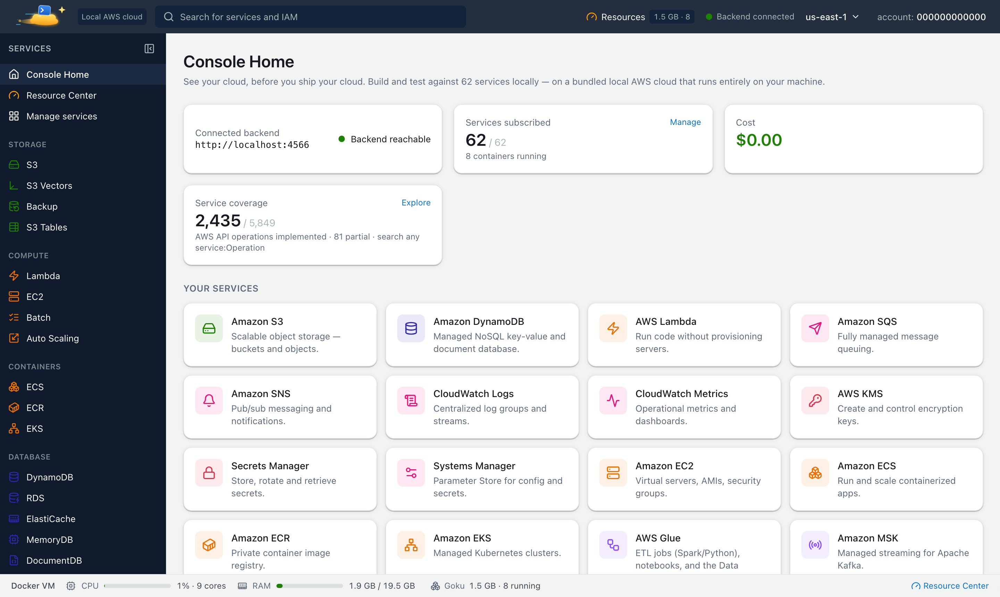

You can run S3, DynamoDB, SQS, Lambda and the rest of 73 AWS-compatible services on your own machine, with no AWS account, no credit card and no bill. This guide uses Goku, a free local AWS emulator: install it, point the AWS CLI at it, create real resources and look at them in a web console.
Goku was formerly called Mimir. Same product, new name: the image is now tanujsoni027/goku (it was tanujsoni027/mimir-aws) and the command is goku. See old and new names.
On this page: What you need · Install · Start · Connect the AWS CLI · Create resources · Console · Your data · FAQ
Running AWS locally means an emulator on your machine answers the same API calls AWS would, on a local address. Your code, the AWS CLI and the AWS SDKs talk to http://localhost:4566 instead of the cloud, and nothing leaves your computer. You need:
You don't need an AWS account, access keys or a region you pay for.
The goku CLI installs natively and runs Goku in Docker for you, so there are no docker commands to write. On macOS and Linux:
$ curl -fsSL https://tanuj24.github.io/goku/install.sh | sh
On Windows, in PowerShell:
PS> irm https://tanuj24.github.io/goku/install.ps1 | iex
Prefer plain Docker? The install page has the one-line docker run command.
$ goku start
goku start downloads the tanujsoni027/goku image on first run, starts it as a container named goku and opens the web console at http://localhost:8080. The AWS-compatible endpoint is http://localhost:4566. goku status shows what's running, and goku stop stops it with everything saved.
goku env prints the variables your tools need: AWS_ENDPOINT_URL, the test / test access key pair and AWS_REGION. Load them into your shell:
$ eval "$(goku env)"
On Windows, run goku env --shell powershell | Invoke-Expression. A current AWS CLI v2 and the AWS SDKs read AWS_ENDPOINT_URL, so from now on aws s3 ls lists your local buckets. eval "$(goku env --unset)" switches the shell back to real AWS.
To configure a tool by hand, use these values. Any non-empty credentials work:
$ export AWS_ENDPOINT_URL=http://localhost:4566
export AWS_DEFAULT_REGION=us-east-1
export AWS_ACCESS_KEY_ID=test
export AWS_SECRET_ACCESS_KEY=test
In code, pass the endpoint to the client. With Python and boto3:
import boto3
s3 = boto3.client(
"s3",
endpoint_url="http://localhost:4566",
region_name="us-east-1",
aws_access_key_id="test",
aws_secret_access_key="test",
)Everything below runs against Goku, not AWS. Resources get the account ID 000000000000 in their ARNs and queue URLs.
$ aws s3 mb s3://my-bucket
echo "hello goku" | aws s3 cp - s3://my-bucket/hello.txt
aws s3 ls s3://my-bucket
$ aws dynamodb create-table \
--table-name Users \
--attribute-definitions AttributeName=id,AttributeType=S \
--key-schema AttributeName=id,KeyType=HASH \
--billing-mode PAY_PER_REQUEST
aws dynamodb put-item --table-name Users --item '{"id":{"S":"u1"},"name":{"S":"Alice"}}'
aws dynamodb get-item --table-name Users --key '{"id":{"S":"u1"}}'
More on tables, indexes and PartiQL in DynamoDB on your machine.
$ aws sqs create-queue --queue-name orders
aws sqs send-message \
--queue-url $AWS_ENDPOINT_URL/000000000000/orders \
--message-body '{"event":"order.placed"}'
aws sqs receive-message --queue-url $AWS_ENDPOINT_URL/000000000000/orders
$ cat > index.mjs << 'EOF'
export const handler = async (event) => {
console.log("Event:", JSON.stringify(event));
return { statusCode: 200, body: JSON.stringify({ hello: "world" }) };
};
EOF
zip function.zip index.mjs
aws lambda create-function \
--function-name my-function \
--runtime nodejs22.x \
--role arn:aws:iam::000000000000:role/lambda-role \
--handler index.handler \
--zip-file fileb://function.zip
aws lambda invoke \
--function-name my-function \
--payload '{"key":"value"}' \
--cli-binary-format raw-in-base64-out \
response.json
cat response.json
The function runs in a real Node.js runtime container, so the first invoke waits while Docker pulls that runtime image. Logs, triggers and step-through debugging are in testing AWS Lambda locally.
Open http://localhost:8080, or run goku open. The console is modeled on the AWS console and covers 60 services. The bucket, table, queue and function you just created are on their service pages. Every service page also has a Load sample data button, so you can explore a populated cloud quickly. goku open sqs or goku open lambda my-function jumps straight to a page.

Everything Goku keeps lives in a data folder on your disk: ~/.goku/data on macOS and Linux, or %LOCALAPPDATA%\Goku\data on Windows. That includes buckets, tables, queues, functions and the data of engines such as RDS databases. Stop Goku, update it or reset Docker, then start it again and you resume where you left off. goku data shows the folder and its size; goku data open opens it.
To go back to a known state, save an environment snapshot and restore it later:
$ goku snapshot save seeded -d "demo data loaded"
goku snapshot restore seeded
A new installation starts only the core services (S3, DynamoDB, Lambda, SQS, SNS, IAM and STS, CloudWatch, KMS, Secrets Manager and Systems Manager) to keep memory use low. Add more on the console's Services page or from a terminal, for example goku services subscribe rds. To keep only what you're working with today running, save those services as a workspace and pause or stop the rest.
No. Goku accepts any non-empty credentials, such as test / test, and never contacts AWS for the services it emulates. There is no sign-up and no bill.
Yes. Once the Goku image and any runtime images your services need (for example a Lambda runtime) are pulled, everything runs on your machine without internet access.
Endpoint http://localhost:4566, region us-east-1 and any local credentials such as test / test. goku env prints them for your shell. An access key made of 12 digits selects a separate, isolated account.
Yes. They are kept in the data folder (~/.goku/data, or %LOCALAPPDATA%\Goku\data on Windows), which survives stops, updates, reinstalls and Docker resets.
No. Goku is a local development and testing sandbox: build and iterate locally, then deploy to real AWS for production.